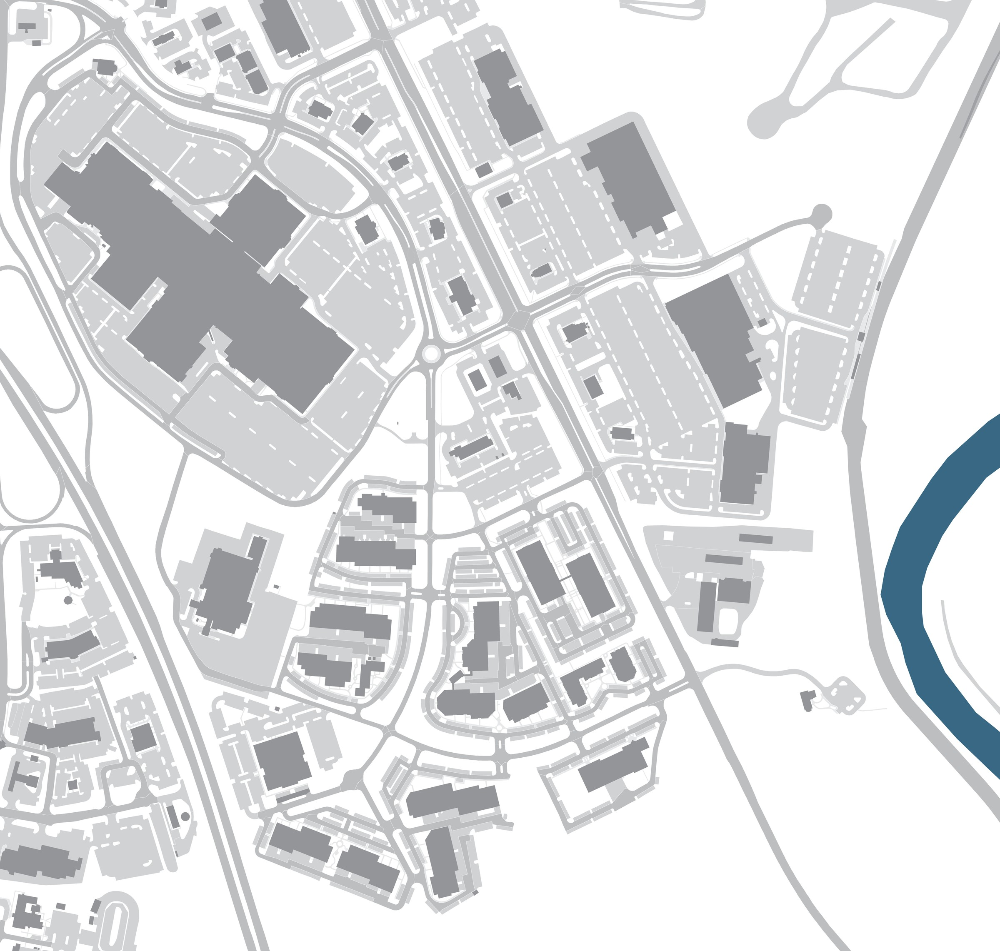
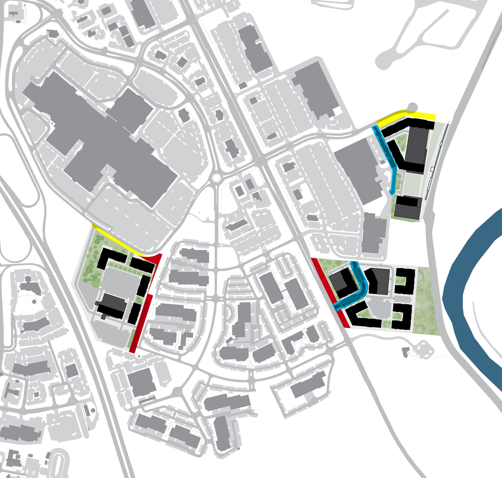
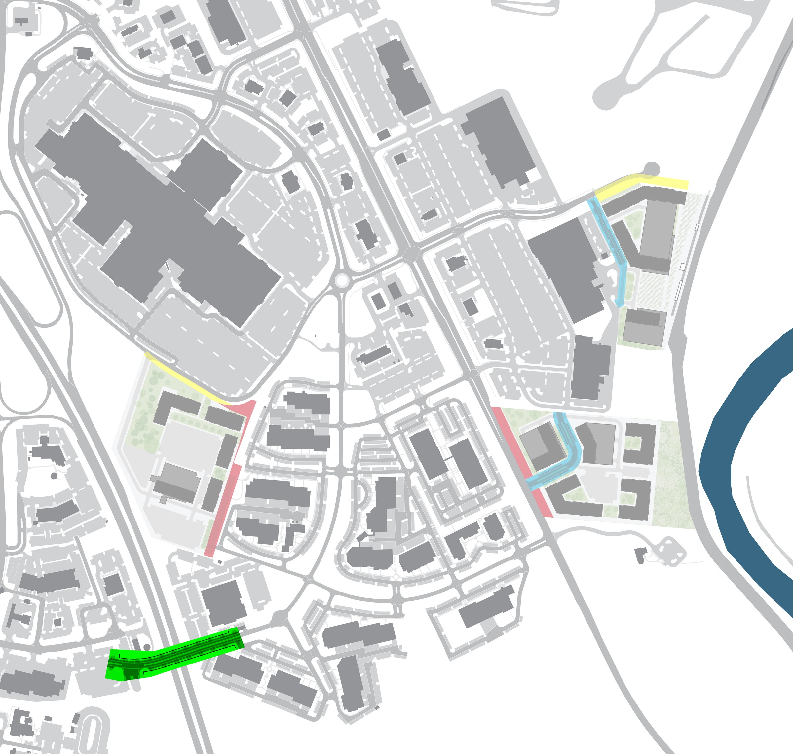
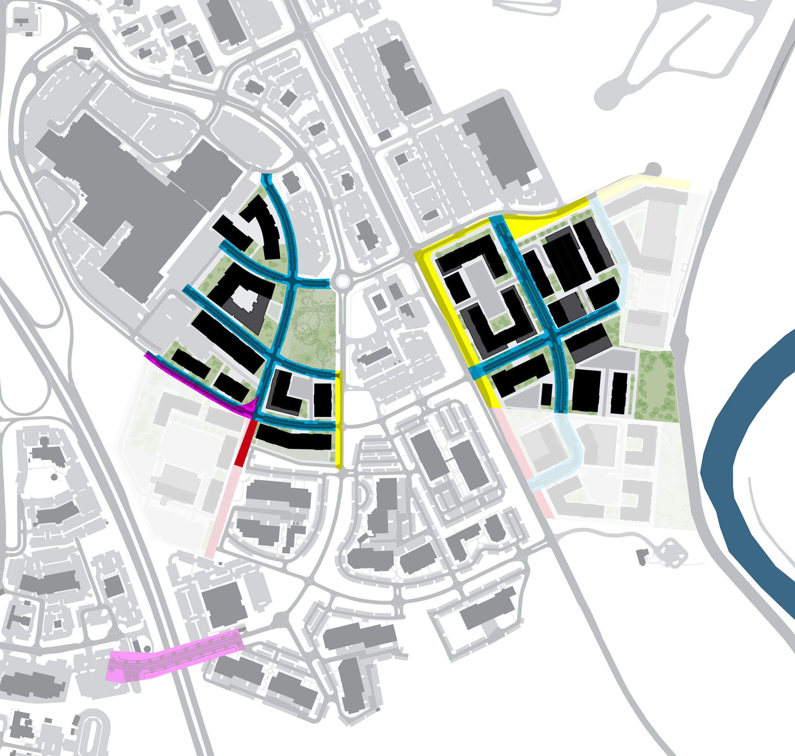
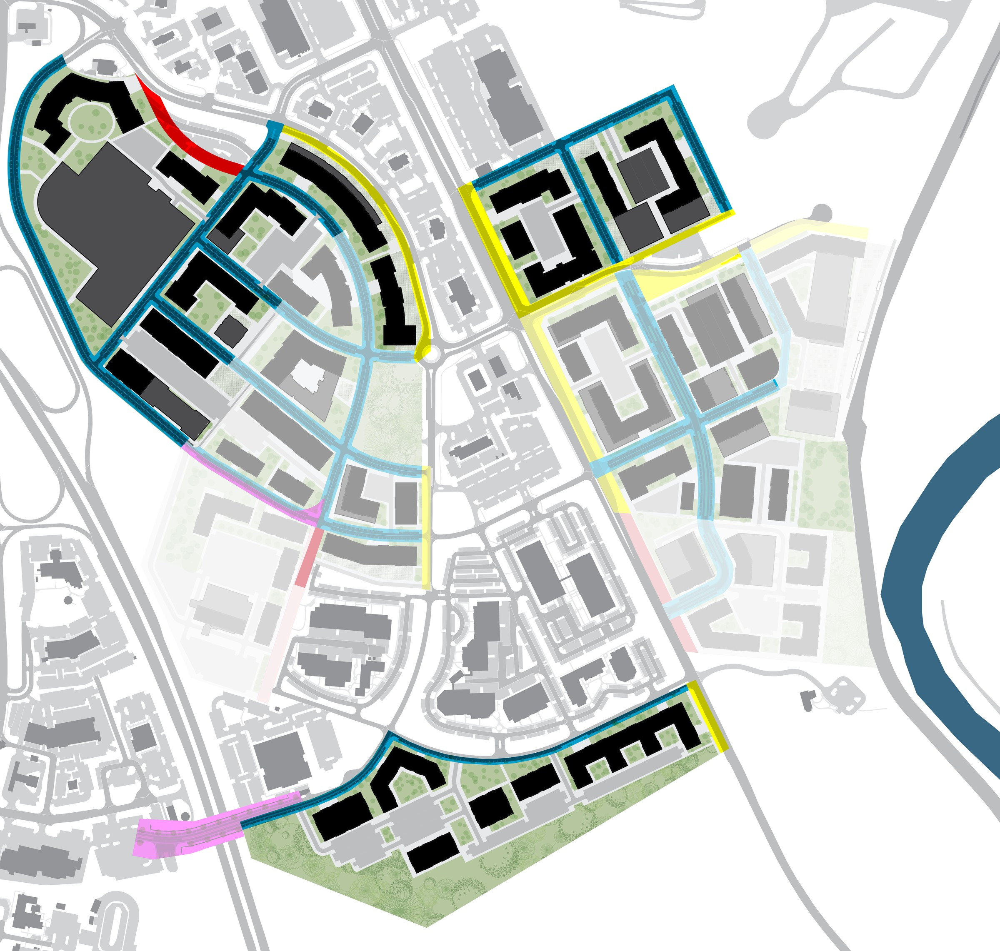
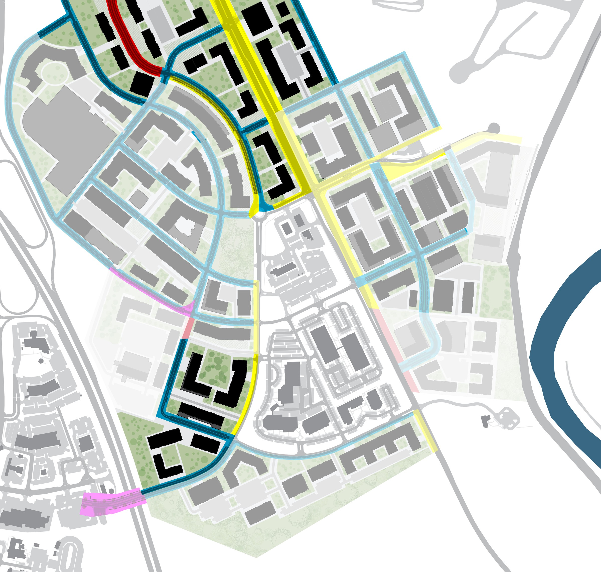
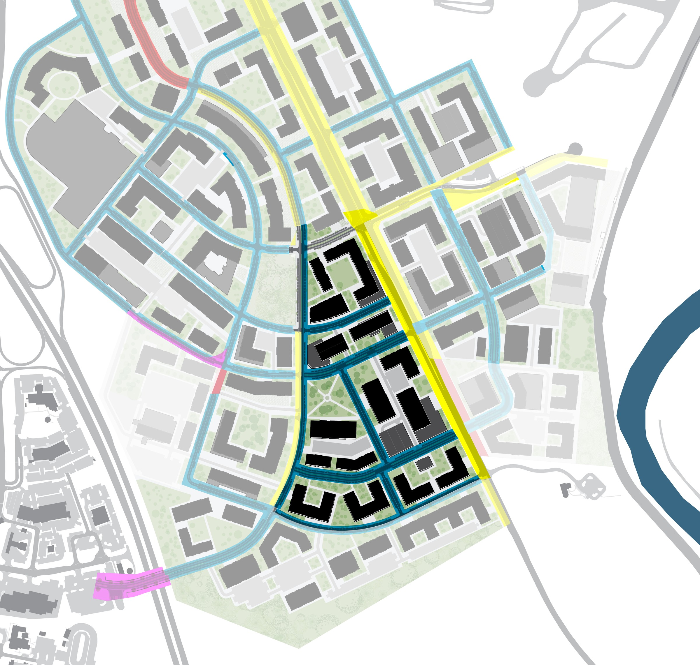
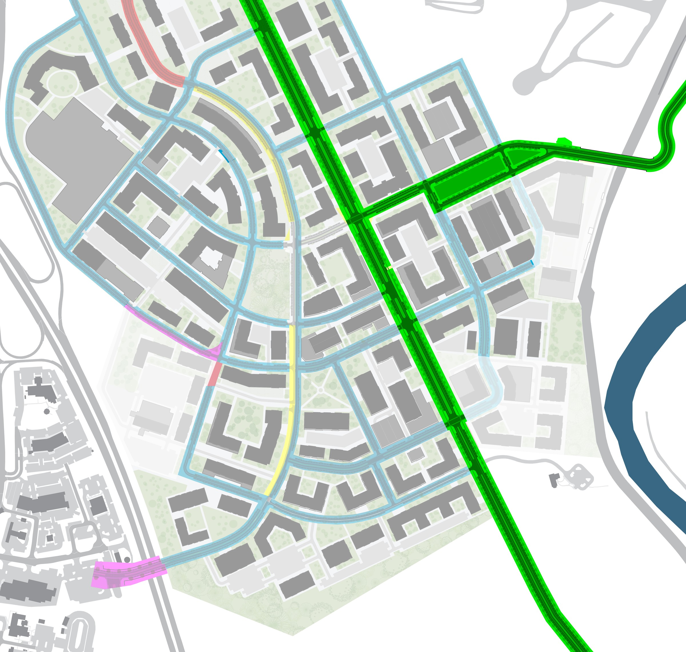

Infrastructure delivery categories
The sequence distinguishes between improvements that can be delivered with individual development and those that must wait for adjoining redevelopment, network continuity, or coordinated capital investment.
Frontage improvement postponed
Frontage improvement postponed until it can connect and function as part of the larger network.
Secure the future street now
Future street land is secured now; construction occurs later when connections are available.
Build functional segments with the project
Street segment is built as part of the project because it can function immediately.
Coordinate major infrastructure publicly
Major infrastructure delivered through a coordinated public project rather than by a single development.
Existing Conditions

Phase 1 · Pioneer Development
Development logic: Begin with uncomplicated redevelopment sites while securing the future network and avoiding isolated pieces of infrastructure.

The first phase focuses on the easiest, most immediately feasible redevelopment opportunities...the “low-hanging fruit.” Each project begins implementing the Regulating Plan by dedicating planned street rights-of-way and constructing streets that can function independently. Where connections depend on future redevelopment of adjoining properties, construction may be deferred, with temporary terminations provided as needed. Frontage improvements may likewise be deferred when isolated construction would provide little benefit. The key is to secure the planned right-of-way early so the network can be completed incrementally over time.
Phase 2 · Major Public Investment
Development logic: Use strategic public investment to unlock additional redevelopment opportunities and strengthen access to transit.

The second phase introduces a major public investment: a new I-270 overpass connecting Ballenger Creek to the Monocacy Station subdistrict. This new east-west connection improves access to the MARC station, reduces the interstate barrier, and helps catalyze redevelopment. As a major capital project, the overpass requires public funding and coordination, while private development continues under the same dedication, construction, and deferral principles established in Phase 1.
Phase 3 · Transit-Oriented Redevelopment Accelerates
Development logic: Concentrate early major redevelopment around transit and large underutilized parking areas, while allowing the mall to begin transitioning incrementally from its transit-oriented edge.

With improved connectivity and growing market confidence, redevelopment expands to larger sites, particularly surface parking lots near the MARC station. These properties convert to compact, mixed-use development with internal streets that establish walkable blocks, while frontage extensions and major infrastructure may remain deferred where they depend on neighboring properties or public investment. Redevelopment of the mall also begins, starting with the portion closest to the MARC station.
Phase 4 · Expansion of Major Redevelopment Areas
Development logic: Extend the emerging urban framework outward from the earliest successful projects while maintaining flexibility for infrastructure that cannot yet be completed.

Redevelopment continues to spread outward as additional portions of the mall and another major parking site near the MARC station are converted to compact, mixed-use development. Planned rights-of-way are dedicated as projects proceed, with functional street segments constructed and dependent segments deferred as needed. Development also begins on a large underutilized property near the Monocacy National Battlefield, extending the emerging street and block network beyond the immediate transit area.
Phase 5 · Network Expansion and Spectrum Drive Realignment
Development logic: Use accumulated redevelopment and previously secured rights-of-way to complete larger network connections that could not reasonably be constructed during the earliest phases.

Redevelopment expands more broadly across the planning area, with outlying properties filling gaps in the emerging street network. A major milestone is the realignment of Spectrum Drive, made possible through accumulated rights-of-way and coordinated redevelopment. The project improves district-wide connectivity and begins tying previously isolated development sites into a more coherent network.
Phase 6 · Central Gap Redevelopment
Development logic: Once redevelopment momentum is established, fill the strategically important gaps between earlier projects and complete connections that previously could not function.

By Phase 6, sustained redevelopment around the MARC station and mall makes more difficult sites viable. The central property between the mall and station redevelops, closing a major gap in the urban fabric and linking previously separate areas into a continuous walkable district. As adjoining projects are completed, previously deferred street segments can also be constructed.
Phase 7 · MD 85 Transformation and Major Regional Connections
Development logic: Once redevelopment has generated sufficient infrastructure contributions and network demand, combine private development obligations with major County and State capital investment to reconstruct the principal corridor and complete major regional connections.

Redevelopment reaches the MD 85 frontage, where individual development obligations and deferred improvements help support a coordinated corridor reconstruction with Frederick County and the Maryland State Highway Administration. The project can address roadway design, pedestrian and bicycle facilities, streetscape, intersections, access, and local street connections as a unified improvement. A new connection to Reichs Ford Road also begins as a major County capital project, further strengthening the broader transportation network.
Phase 8 · Full Build-Out
Development logic: Complete the remaining gaps in the network and transition from a collection of incremental projects into the fully realized long-term urban framework.
The final phase represents long-term build-out of the South Frederick vision. Remaining sites redevelop, deferred streets are completed, and temporary circulation arrangements are replaced by permanent connections. The mall and MARC station areas become an interconnected mixed-use, transit-oriented district, while MD 85 evolves into a multimodal corridor linked to a fine-grained local street network. What began as isolated projects ultimately forms a continuous system of walkable neighborhoods and centers.